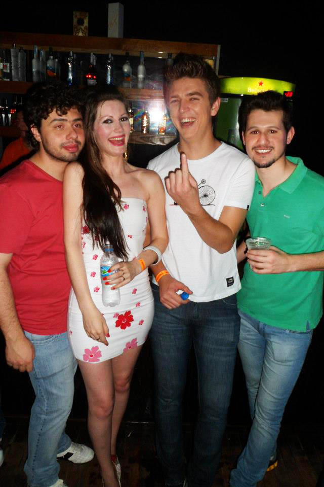
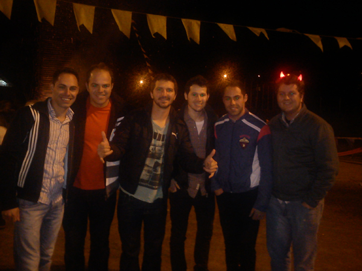
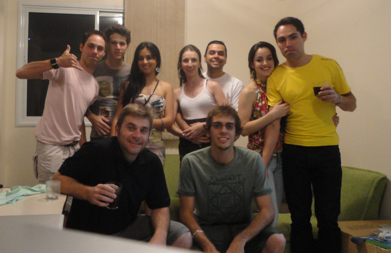
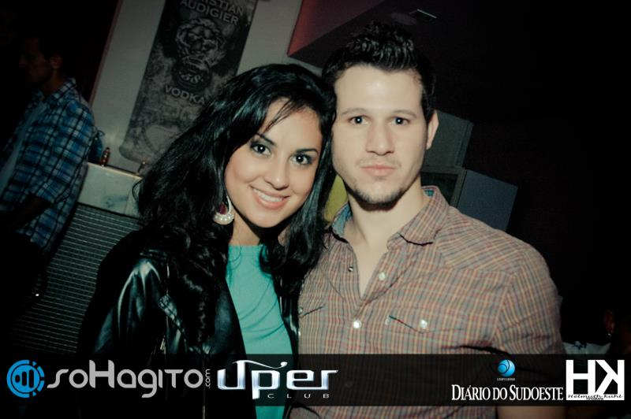
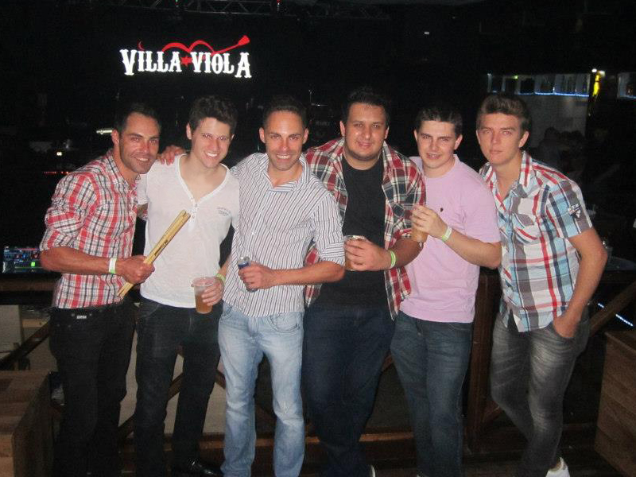
 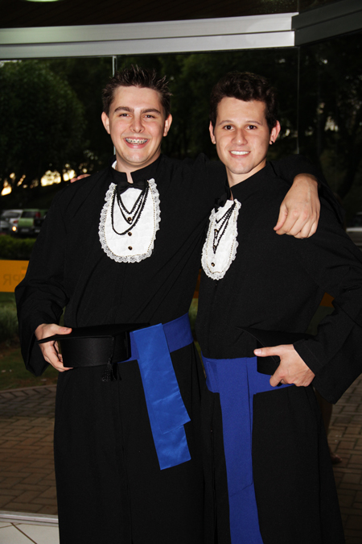
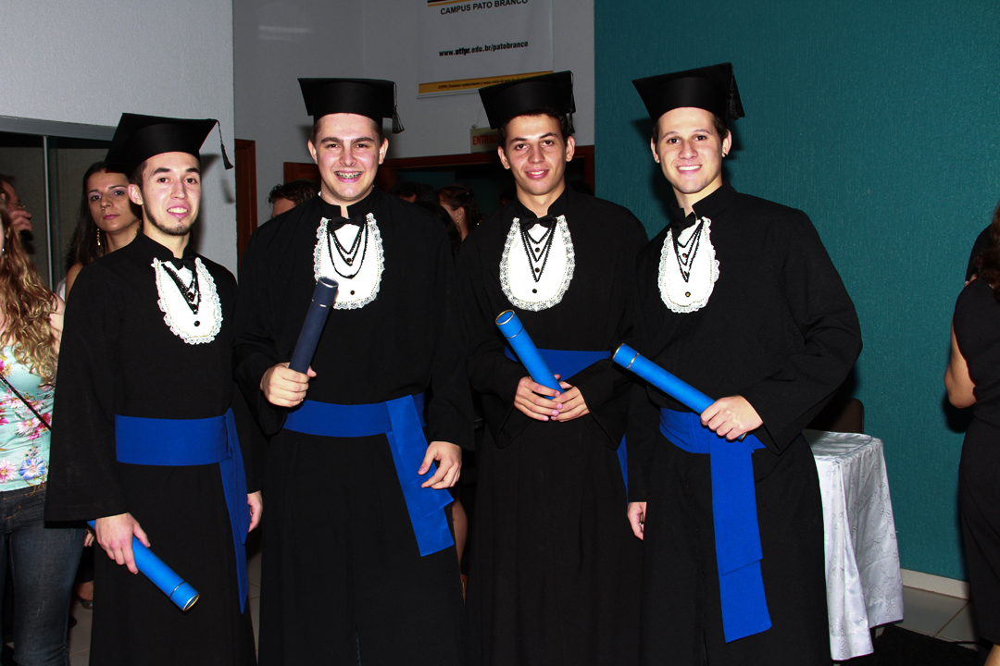
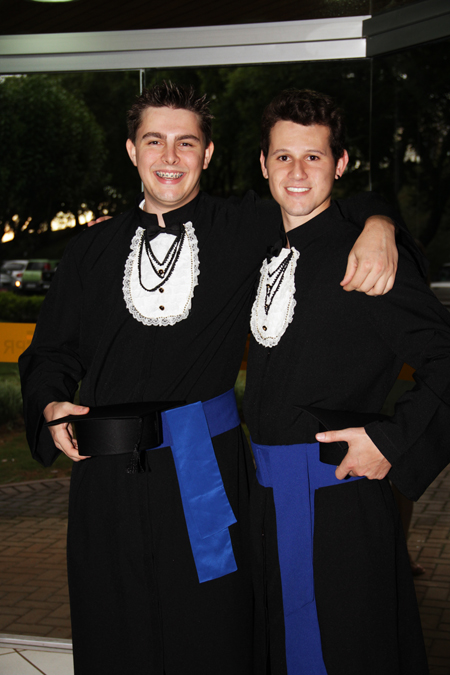
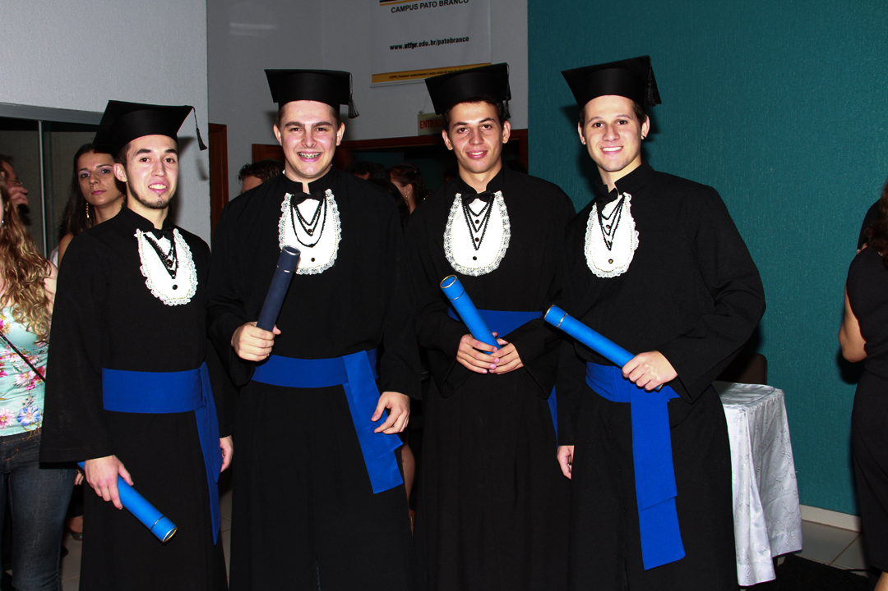


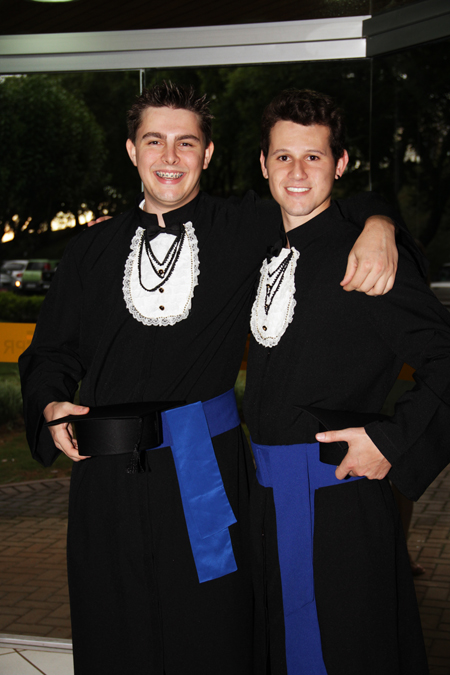
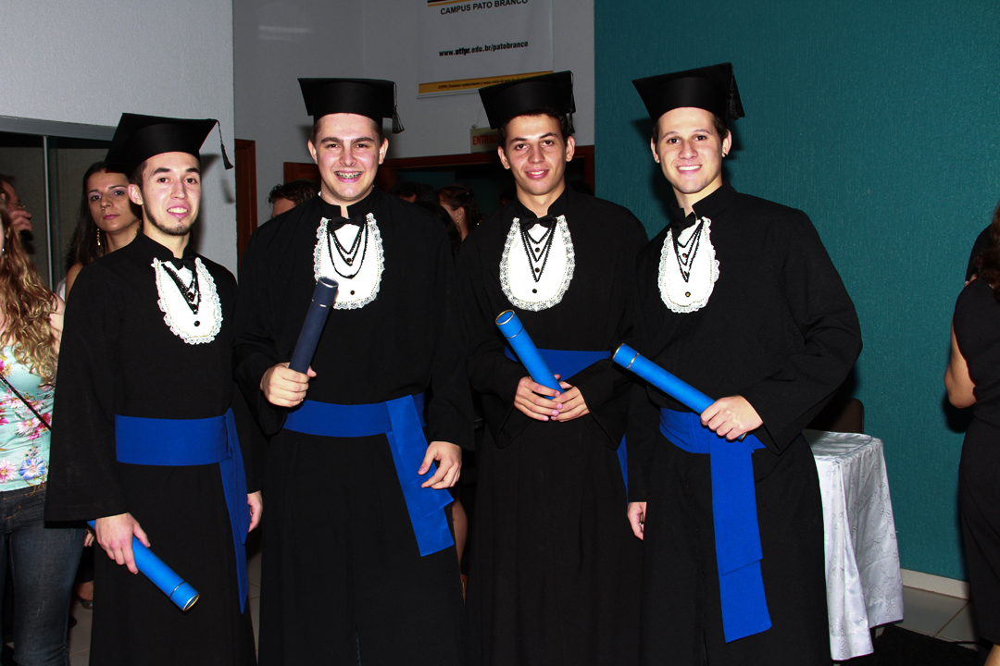
Thiago Cagnin Rodrigues
26 anos, Solteiro
Avenida Tupi, 1997, apto. 506
Centro - Pato Branco, PR.
(46) 9914-3794
thiagocr.utfpr@gmail.com
Resumo das Qualificações
- Desenvolvimento de softwares baseados na web e/ou em desktop;
- Gerênciamento de banco de dados avançado;
- Trabalhar efetivamente sozinho ou em equipe;
- Experiência em desenvolvimento de Web Service Rest com JAVA desde janeiro/2014;
- Desenvolvimento em MVC (Model, View, Controller) com PHP;
- Desenvolvimento em PHP, CSS, HTML, AJAX e JS desde setembro/2009;
- Desenvolvimento em PHP, CSS, HTML, AJAX e JS desde setembro/2009;
- Desenvolvimento em Delphi 7, Delphi for .Net e Delphi XE desde janeiro/2008;
- Experiência em em SQL Server (2000,2005,2008,2012) desde dezembro/2007
- Experiência em em MySQL, Oracle(10g,11g), Postgres(8.4,9.1) e Firebird(2.1) desde agosto/2010
- (Delphi) Experiência na criação de relatórios com FastReport e com QuickRepot
- (JavaScript e CSS) Conhecimentos avançados da biblioteca JQuery e estilizaçõo com CSS
- (PHP) Conhecimentos intermediários com desenvolvimento em Zend Framework
- Formado em Técnologia em Análise e Desenvolvimento de Sistemas pela UTFPR - Universidade Técnológica Federal do Paraná
Experiência Profissional
Desenvolvimento Web/Desktop - Lider de Equipe
IDS Software e Consultoria (www.ids.inf.br), Pato Branco, Paraná. (Agosto, 2011 - Atualmente)
- Banco de Dados:
- Implementação e manutenção dos banco de dados (Firebird, Oracle, Postgres e SQL Server);
- Criação, manutenção e implementação de códigos em linguagem TSql e pgSQL;
- Desenvolvimento e manutenção de procedures, trigguers e views para todos os bancosde dados;
- Gerênciamento de Filegroups para imagens no SQL Server;
- Desenvolvimento e manutenção de aplicativos de backups e restaurações;
- Programação web:
- Desenvolvimento de Web Service Rest com tecnologia Java;
- Implementação e manutenção de sistemas desenvolvido em HTML, CSS, JS e Delphi for .Net;
- Implementação e manutenção de serviços para Windows acessado por aplicações Web;
- Configuração do servidor de aplicações IIS (Windows);
- Utilização do REM Objects para conexões criação de Web Services;
- Programação desktop:
- Desenvolvimento de aplicativos em Delphi (Pascal script);
- Manutenção e implementação do sistema WinSaude(pricipal sistema da empresa) desenvolvido em delphi 7;
- Criação e manutenção de relatórios utilizando FastReport e QuickReport;
- Instrutor Delphi no aprendizado de novos funcionários;
Desenvolvimento web - Analista de Sistemas
Datazip Sistemas, Pato Branco, Paraná. (Agosto, 2010 - Julho, 2011)
- Desenvolvimento de Framework Web baseado em MVC para gerênciamento de web sites;
- Utilização de PHP, MySql, HTML, XML, JavaScript e Ajax para de desenvolvimento de Web Sites;
- Utilização da biblioteca Jquery, CSS e HTML;
- Utilização de MXML e Action Script (Flash);
- Utilização do Photoshop para o recorte, edição e criação de layouts;
- Utilização de plugins para desenvolvimento em PHP e HTML e plugins em javascript (Cake PHP, ZendFramework, Jquery...);
Desenvolvimento web/desktop - Programador Junior
Xpert (www.xpert.com.br), Pato Branco, Paraná. (Janeiro, 2009 - Julho, 2010)
- Programação desktop:
- Desenvolvimento de aplicativos em Delphi (Aplicativos para exportação e importação de dados);
- Manutenção e implementação desistemas desenvolvidos em delphi 7 e delphi 2007;
- Criação anutenção de relatórios utilizando FastReport e QuickReport;
- Criação, manutenção e implementação de códigos em linguagem TSql (SQL Server);
- Desenvolvimento de procedures, trigguers e views para banco de dados;
- Utilização do Microsoft Visual Source Safe para o compartilhamento de código e controle de versão;
- Programação web:
- Desenvolvimento do site da empresa;
- Utilização de PHP, MySql, HTML, XML, JavaScript e Ajax para o desenvolvimento do site;
- Migração do sistema desktop para plataforma web;
- Desenvolvimento do sistema web com PHP, MsSql, Html, JavaScript, Ajax, XML, Jquery, Css e FPdf;
- Desenvolvimento de um novo projeto com a Utilização de ActionsScript, Flash/Flex, Postgres, MsSql e PHP;
- Utilização do Photoshop para o recorte, edição e criação de imagens;
Suporte técnico
Sponte (www.sponte.com.br), Pato Branco, Paraná. (Dezembro, 2007 - Dezembro, 2008)
- Atendendimento direto ao cliente via chat, telefone e skype
- Elaboração de manuais de utilização do sistema para o usuário final;
- Realização de testes no sistema a cada nova versão lançada;
- Realização de treinamentos aos clientes via skype e VNC.
Conhecimento em Tecnologias
Banco de Dados - Avançado:
- Firebird 2.1
- Microsoft SQL Server 2000/2005/2008/2012
- MySQL
- Oracle 10g e 11g
- Postgres 8.4 e 9.1
Programaço desktop - Avançado:
- Delphi 7/2007
- Java - Intermediário
- Pascal Script
Plataformas de Desenvolvimentos:
- Linux
- Windows
Programaço web (Front-end) - Avançado:
- Ajax
- JavaScript/Jquery
- ActionScript - Intermediário
- HTML/XHTML - CSS
Programaço web (Back-end) - Avançado:
- Delphi for .Net
- Flash/Flex - Básico
- JSP
- PHP
Metodologias:
- Scrum
- Extreme Programming (Desenvolvimento Interativo, Refatoração)
Formação Acadêmica
Ensino Superior:
- Concluído em dezembro de 2012 em Técnologia em Análise e Desenvolvimento de Sistemas na UTFPR - Pato Branco
Ensino Médio:
- Concluído em dezembro de 2006 na UTFPR - Pato Branco
Línguas estrangeiras
- Inglês: Leitura (Avançado), Escrita (Intermediário), Conversação (Intermediário)
- Espanhol: Leitura (Intermediário), Escrita (Básico), Conversação (Básico)
Cursos de aperfeiçoamento
- Curso Borland Delphi 2007 - Maio/2009 - 40 horas
- Gerenciamento de Projetos com Scrum - Palestra - 2 horas
- Minicurso Java/J2EE - Novembro/2006 - 8h
- Informática Empresarial I e II - Janeiro/2005 - 120h Inglês - Março/2002 - 80h
Thiago Cagnin Rodrigues - Pato Branco, Paraná